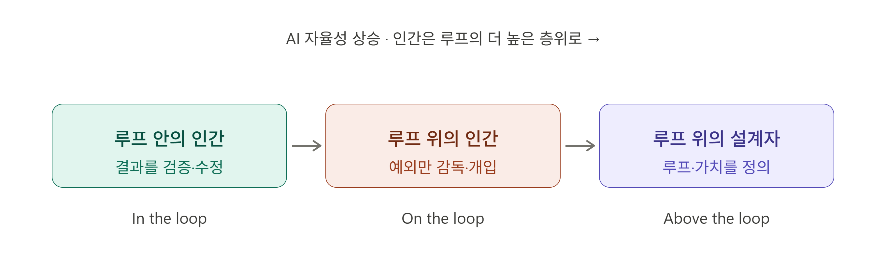

AI 에이전트와
일하는 법
대답하는 도구에서 — 일하는 동료로
2026. 6
"챗봇 써봤으니 안다"는 착각
한 번 시키면 48배 더 오래 — 혼자 일한다
출처: Harvard × Perplexity, 2026. 6
SECTION 01
이미 일어난 변화
먼 미래가 아니라 — 지금, 과도기
인터페이스의 축: 지시 → 위임
'어떻게'를 일일이 지시하다가 — '무엇을'만 위임하는 단계로
콜센터 ARS vs 전담 비서
챗봇과 에이전트의 결정적 차이
ARS (챗봇)
정해진 메뉴 안에서만 응답
한 번 묻고 한 번 답
매번 처음부터 다시 설명
전담 비서 (에이전트)
맥락을 이해하고 알아서 조사
판단 · 실행 · 중간 보고
피드백 반영 · 후속 조치까지
에이전트 = 알아서 일하는 디지털 일꾼 — 챗봇과는 구조적으로 다른 체험
단발성 → 밤새 도는 자율 루프
지시 → 생성
막히면 멈춤
사람이 다시 개입
목표만 주면 스스로 점검
에러 인지 · 맥락 기록
밤새 수백 번 고쳐 완성
사람 손 없이 한 번에 끝낼 일의 분량이 — 4~7개월마다 두 배, 이미 수 시간
출처: METR, 2026 (코딩·추론 과제 기준 — 다른 사무 업무도 같은 곡선)
한 명 → 에이전트 군단
한 번에 하나씩
여러 에이전트가 동시에
한 사람이 지휘
요즘은 한 사람이 수천~수만 개의 에이전트를 동시에 굴린다
— Claude를 만든 Anthropic의 실제 이야기 (2026)
SECTION 02
숫자가 말하는 전환기
개인의 체감이 아니라 — 측정된 현실
전문가의 일을 — 분 단위로
핵심은 한 숫자가 아니라 — 빠르게 오르는 기울기
출처: GDPval, OpenAI (모델 세대별 향상)
도구는 도착했다
아직 못 따라온 건 —
우리가 일하고, 평가하는 방식
능력과 관성 사이의 틈 — 지금이 과도기
SECTION 03
실행자 → 조율자
직접 하는 사람에서 — 시키고 판단하는 사람으로
한때의 예상은 — 빗나갔다
개발자가
먼저 대체된다
모두가
개발자처럼 일한다
누구나 만드는 사람이 된다
'개발자처럼' = 코딩이 아니라 — 일을 잘게 나눠 맡기고 결과를 판단하는 사고
경험솔직히 저도 우리 개발 일이 먼저 사라질 줄 알았다 — 지금은 정반대로 본다
이제 — 만드는 비용이 무너졌다
코딩을 몰라도, 디자이너가 없어도 — 누구나 의도로 결과를 만든다
인간의 언어가 — 새로운 프로그래밍 언어가 된 셈
가치 사슬의 이동 — 기술에서 '문제를 가진 사람'에게로
값어치가 '기술'에서 — '문제를 가진 도메인 오너'에게로 이동
성과를 만드는 식
성과 = 모델 × 에이전트 × 나
두뇌
갈수록 평준화
실행
갈수록 흔해짐
판단 · 도메인
결정적 변수
모델·에이전트는 평준화되고 — 차이를 만드는 건 나
직무가 무엇이든 — 실행은 AI, 판단은 사람
| 직무 | AI가 맡는 실행 | 사람이 키우는 판단 |
|---|---|---|
| 기획 | 자료 수집 · 시장 요약 · 초안 | 무엇을 풀 문제로 정의할지 |
| 마케팅 | 카피 변형 · 세그먼트 · 성과 집계 | 브랜드에 어떤 메시지가 가치인지 |
| 설계 | 대안 생성 · 검토 · 문서화 | 제약 조건과 트레이드오프 결정 |
| 제조 | 데이터 정리 · 이상 탐지 · 리포트 | 현장 맥락 해석 · 조치 우선순위 |
손으로 만드는 시간은 줄고 — 판단·검증의 밀도가 오른다
SECTION 04
AI와 일하는 법
이름은 계속 바뀌어도 — 본질은 하나, AI를 위한 HR
방법론은 이름을 갈아입어 왔다
엔지니어링
엔지니어링
엔지니어링
엔지니어링
용어와 기법은 갈아입지만 — 묻는 건 늘 같다: "AI에게 일을 어떻게 맡길까"
결국 — 'AI를 위한 HR'
사람을 뽑아 일을 맡기고 평가하듯 — AI를 브리핑·위임·관리
사람의 자리 — 루프 안에서, 루프 위로

AI 자율성이 오를수록 — 사람은 '루프 위의 설계자'로
매번 끼어드는 대신 — 일이 돌아가는 판을 짜는 사람
그래서, 당신의 새 역할
브리핑 · 위임 · 검토
사람을 뽑아 맡기고 평가하듯 — AI를 그렇게 다룬다
경험요즘 저는 아침에 출근하면 — 밤새 돌려둔 에이전트들의 결과부터 검토한다
그리고 — AI가 다음 할 일까지 스스로 제안한다
자기가 한 일을
스스로 되짚어 고치고
"다음엔 이걸 해볼까"
먼저 제안하기 시작
맡길수록 — 한 사람이 굴리는 일의 양이 늘어난다
"넘었다"가 아니라 "문턱 앞" — 큰 변화이자 신중히 다룰 영역
SECTION 05
한 사람이 만들 수 있는 양 — 폭이 넓어진다
레버리지를 먼저 잡는 사람에게 — 몇 배의 기회
피할 흐름이 아니라 올라탈 흐름 — 빠르냐 늦냐의 차이
AI를 쓰는 건 — 이제 기본값이다
"사람을 더 뽑기 전에, 왜 그 일을 AI로는 못 하는지부터" — 이미 이런 사규를 둔 회사도 있다
AI 활용이 어느새 — 일하는 방식의 기준선
SECTION 06
'일을 잘한다'의 새 정의
답이 흔해진 시대 — 무엇을 묻고, 무엇을 고를까
답은 흔해졌다 — 값이 오르는 건 '질문'
AI가 100배 속도로 답을 쏟아낼수록 — '무엇을 물을 것인가'가 실력이 된다
오래된 말 — "옳은 답보다, 옳은 질문"
AI가 '올바르게 하기'를 — 공짜로 만든다
그래서 남는 일은 — '올바른 일'을 고르는 것
과제는 주어지지 않는다 — 스스로 정의하는 것
SECTION 07
질문·가치가 남는다면 — 그럼 내 도메인 지식은?
현장의 맥락을
모른다
직접 실행이
느리다
현장의 불편함을
직접 푼다
절반은 맞다 — 그래도 정직하게 본다: 무엇을 더 키울까
도메인 지식도 — 녹는 해자 (해자 = 남이 못 넘어오는 진입장벽)
새 분야를 흡수하는 속도가 — 그 안에서 익숙하게 일하는 속도를 추월
멈춘 지식은 천천히 가치를 잃는다 — 그래서 무엇이 끝까지 남나
끝까지 안 흔해지는 것 — 주관성과 심미안
내가 어떤 순간 무엇 때문에
막히는지 — 누구도 모른다
10초 만에 나온 결과가
명품인지 그럴듯한 오답인지
쉽게 흉내 못 내는 안목과 책임 — 끝까지 사람의 몫
DEMO
직접 본다
남의 데이터지만 — 우리 월간 보고서와 다르지 않다
경험반나절 걸리던 부서 보고서 통일을, 처음 맡겨보고 30초에 끝났을 때의 그 황당함
데모 속 작업 — 결국 우리가 매일 하는 일
| 데모 작업 | 실제 사무 업무 | 시간 절감 |
|---|---|---|
| 데이터 정제 | 부서별 보고서 형식 통일 | 1~2시간 → 1분 |
| 피벗 · 차트 | 월별 KPI 추이 시각화 | 2~3시간 → 5분 |
| 대시보드 | 경영 현황판 제작 | 1~2일 → 10분 |
| 이상치 분석 | 이상 거래처 탐지 | 반나절 → 5분 |
| 보고서 초안 | 월간 경영 분석 리포트 | 3~4시간 → 10분 |
지저분한 데이터 → 바로 보고서 표
빈 칸 · 오류값 혼재
열 이름 통일 안 됨
오류값 자동 감지
바로 붙여넣기 가능
데이터만 주면 — 정리·검증·요약까지 한 번에
실제 시연 — 데이터를 다루고, 일을 끝낸다
말이 아니라 — 실제로 끝까지 해낸다
SECTION 08
좋기만 한 건 아니다
도구를 쥔다고 — 저절로 좋아지지 않는다
AI 만능론의 감정 곡선

경험저도 처음엔 "이제 다 되겠다" 싶다가 곧 실망했고 — 지금은 담담하게 쓴다
AI는 증폭기 — 요술봉이 아니다
강점을
가속
기존 혼란을
증폭
잘못 맡긴 일은 — 틀린 결과를 더 빨리, 더 많이
출처: Google DORA 2025
두 가지 비용 — 환각과 인지 소진
없는 사실·수치를
자신 있게 지어낸다 → 검증 필수
검토량이 폭증한다
생성과 판단 시간 분리 · 휴식
경험저도 검토량이 폭증해 지친 시기가 있었다 — 만드는 시간과 판단하는 시간을 나누고서 풀렸다
AI에게 시키면 — 아무도 안 읽는 보고서도 무한히
속도가 아니라 질문 — 무엇을 위한 생산성인가
쏟아내기 쉬워질수록 — '왜 만드는가'를 안 물으면 일만 늘어난다
직원은 이미 쓴다 — 조직만 모른다
숨어서 쓰는 'Shadow AI' — 직원은 앞서가고, 조직만 뒤늦다
경험사실 저도 한동안은 조용히 썼다 — "드러내도 괜찮다"가 먼저였다
왜 숨길까 — 몰래 쓰는 직원들(Secret Cyborgs)과 낡은 평가체계
결국 AI 전환은 IT가 아니라 — 사람과 평가의 문제
경고를 다 감안해도 — 방향은 분명하다
미래는 정해졌다
만드는 비용은 0으로, 한 사람의 산출은 폭발하고 —
일의 무게중심은 실행에서 판단·설계로
당신은 AI의 매니저다
프롬프트든 루프든, 이름은 바뀌어도 —
결국 AI를 브리핑·위임·관리하는 사람
정해지지 않은 단 하나
계속 배우는 능력
학습 100배는 양날의 칼 — 내 해자를 녹이는 동시에, 새 영역으로 건너갈 무기
유일하게 영구적인 자산은 — '계속 움직이는 능력'
월요일 아침, 당장 해볼 것
- 1. 이번 주 반복 업무 하나를 — 순서대로 적어 "어떻게 자동화할까" 묻기
- 2. 늘 쓰던 보고서 하나를 — 데이터만 주고 초안 시키기
- 3. AI가 낸 결과는 — 그대로 쓰기 전에 한 번 검증
크게 시작할 필요는 없다 — 한 가지부터
Q & A
질의 · 토론
- 우리 팀에서 — 가장 먼저 맡길 반복 업무는?
- "무엇을 위한 생산성인가?" — 우리 부서의 답은?
- AI에 넘기고, 사람이 지킬 — 마지막 판단은?
AI 에이전트 세미나 · 2026. 6